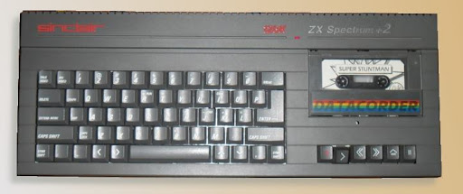
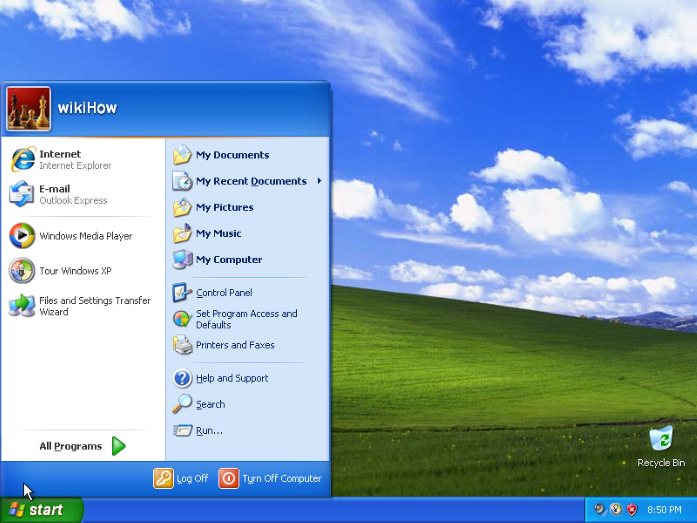
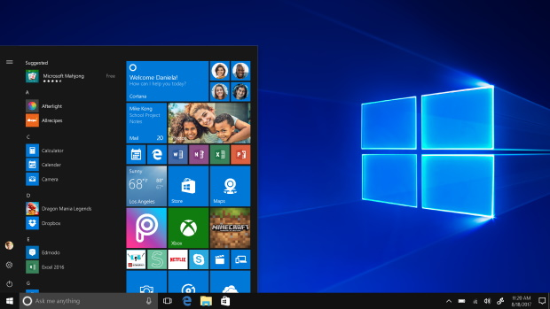

Les ordinateurs sous Windows
Windows 1
Le ZX Spectrum 128 est sortie dans le monde en 1986, avec une RAM de 128Ko. Il pouvait acceuilir windows 1, qui était sorti le 20 novembre 1985, et le prix était de 99 dollars.
Windows 1 rajouter une interface graphique a l'ordinateur et quelques applications, telle qu'un editeur de texte, paint et un gestionnaire de commande.

Windows XP
Windows XP, du nom de code Whister et un système d'exploitation multitâche permettant l'usage d'un ordinateur tel qu'un ordinateur fixe ou portable ou encore un média center.
Windows XP est officiellement le successeur de Windows Millenium et de Windows 2000.
Sorti le 25 octobre 2001, il a été vendu à près de 400 million de copie en janvier 2006.

Windows 10
Le Windows 10 est un système d'exploitation de la famille Windows NT développer par la société américaine Microsoft.
Officiellement présenter le 30 septembre 2014, il est disponible depuis le 29 septembre 2015.
Bien que le système s'appelle Windows 10, il s'agit en réaliter de Windows NT 6.4.
Windows 10 reste une ultime version de Windows Vista et le successeur de Windows 8.1.
